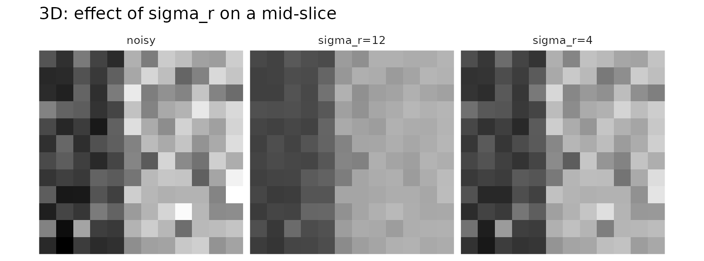
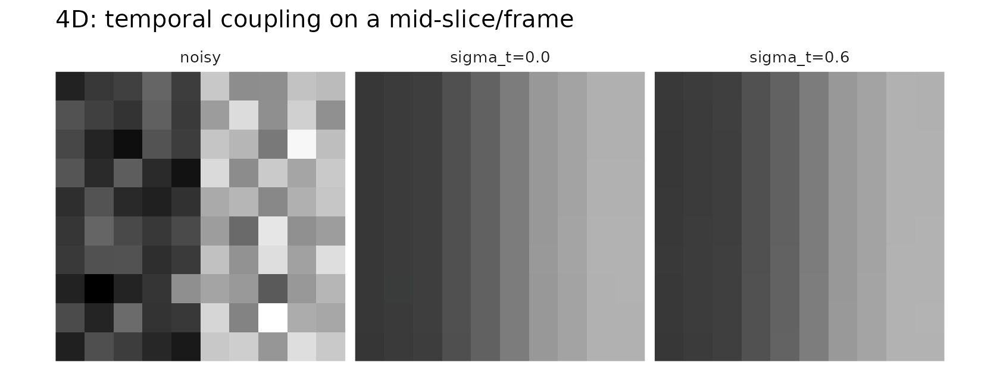

Joint Bilateral Smoothing with a Permutohedral Lattice
fmrismooth authors
2025-08-28
bilateral-lattice.RmdThe bilateral filter smooths noise while respecting image edges. It does so by averaging neighboring voxels that are close in space and similar in intensity according to a guide image. Implementations based on the permutohedral lattice embed spatial and range features in a high‑dimensional lattice, then perform fast splat–blur–slice operations.
This vignette explains how the lattice variant in
fmrismooth works and how to set its parameters.
What is a permutohedral lattice, and why use it?
A bilateral (or joint bilateral) filter performs a Gaussian blur not only in space but also in an additional “range” dimension built from intensity and other features. Doing an exact Gaussian blur in a high‑dimensional feature space on the regular grid is expensive. The permutohedral lattice is a sparse, skewed grid that tessellates feature space into simplices. It enables an efficient three‑step procedure — often called splat → blur → slice:
- splat: project each voxel’s feature vector to the nearest lattice simplex and accumulate its value into the simplex vertices;
- blur: run a small fixed‑degree Gaussian-like convolution along lattice axes (fast because the lattice is sparse and low‑degree);
- slice: interpolate the blurred lattice values back at the original feature locations.
This gives a very good approximation to a high‑dimensional Gaussian blur at a cost that is linear in the number of voxels and roughly linear in the feature dimensionality. In practice this makes joint bilateral filtering with multiple guides and optional temporal/design features fast enough for routine use on fMRI volumes.
Intuition and features
Each voxel is represented by a feature vector that always contains
spatial coordinates and can include additional components. For 3D
filtering, the spatial part is
(x/sigma_sp, y/sigma_sp, z/sigma_sp). If you provide a
guide volume, its intensity contributes as g/sigma_r.
Additional guides simply append more intensity features, each scaled by
its own sigma_r element.
For 4D inputs, you can also add a temporal component
t/sigma_t, and optionally a design regressor
d_t/sigma_d for time‑varying effects you want to preserve.
Filtering is then an isotropic Gaussian blur in this feature space,
projected back to the image grid.
Parameters and their roles
sigma_sp sets how far spatially to average; larger
values increase smoothing. sigma_r controls how strongly
the filter respects intensity edges: small values stop averaging across
edges; larger values permit more mixing. In 4D, sigma_t
couples frames through time; setting it to zero decouples frames. The
design vector and sigma_d create an additional
feature that encourages consistency across frames with similar design
values.
Internally, blur_iters performs repeated lattice blurs
to approximate a wider Gaussian. Most use cases need 1–2 iterations.
3D example
d3 <- c(12, 12, 12)
vol <- array(100, dim = d3)
vol[6:12, , ] <- vol[6:12, , ] + 20 # a step edge
noisy3d <- vol + array(rnorm(prod(d3), sd = 6), dim = d3)
out3d_soft <- bilat_lattice3d(noisy3d, sigma_sp = 2.0, sigma_r = 12)
out3d_edgey <- bilat_lattice3d(noisy3d, sigma_sp = 2.0, sigma_r = 4)
c(var_noisy = var(as.vector(noisy3d)),
var_soft = var(as.vector(out3d_soft)),
var_edgey = var(as.vector(out3d_edgey)))
#> var_noisy var_soft var_edgey
#> 137.92025 56.06691 56.06691
# visualize a central slice
zmid <- ceiling(d3[3]/2)
viz3 <- rbind(
slice_df3d(noisy3d, zmid, "noisy"),
slice_df3d(out3d_soft, zmid, "sigma_r=12"),
slice_df3d(out3d_edgey, zmid, "sigma_r=4")
)
ggplot(viz3, aes(x, y, fill = val)) +
geom_raster() +
coord_equal() +
scale_x_continuous(expand = c(0,0), breaks = NULL) +
scale_y_reverse(expand = c(0,0), breaks = NULL) +
scale_fill_gradient(low = "black", high = "white") +
facet_wrap(~method, nrow = 1) +
guides(fill = "none") +
theme_minimal(base_size = 10) +
theme(axis.title = element_blank(), axis.text = element_blank(), panel.grid = element_blank()) +
labs(title = "3D: effect of sigma_r on a mid-slice")
The smaller sigma_r preserves edges more aggressively at
the cost of less denoising across intensity transitions.
4D example with temporal coupling
d4 <- c(10, 10, 10, 16)
base <- array(100, dim = d4)
base[6:10, , , ] <- base[6:10, , , ] + 20
noisy4d <- base + array(rnorm(prod(d4), sd = 5), dim = d4)
out_spat_only <- bilat_lattice4d(noisy4d, sigma_sp = 2.0, sigma_t = 0.0, sigma_r = 10)
out_spat_temp <- bilat_lattice4d(noisy4d, sigma_sp = 2.0, sigma_t = 0.6, sigma_r = 10)
c(var_spat_only = var(as.vector(out_spat_only)),
var_spat_temp = var(as.vector(out_spat_temp)))
#> var_spat_only var_spat_temp
#> 60.64485 60.76268
# visualize a central slice of a central frame
zmid <- ceiling(d4[3]/2); tmid <- ceiling(d4[4]/2)
viz4 <- rbind(
slice_df4d(noisy4d, zmid, tmid, "noisy"),
slice_df4d(out_spat_only, zmid, tmid, "sigma_t=0.0"),
slice_df4d(out_spat_temp, zmid, tmid, "sigma_t=0.6")
)
ggplot(viz4, aes(x, y, fill = val)) +
geom_raster() +
coord_equal() +
scale_x_continuous(expand = c(0,0), breaks = NULL) +
scale_y_reverse(expand = c(0,0), breaks = NULL) +
scale_fill_gradient(low = "black", high = "white") +
facet_wrap(~method, nrow = 1) +
guides(fill = "none") +
theme_minimal(base_size = 10) +
theme(axis.title = element_blank(), axis.text = element_blank(), panel.grid = element_blank()) +
labs(title = "4D: temporal coupling on a mid-slice/frame")
Increasing sigma_t introduces gentle temporal smoothing
that can improve SNR if the signal is temporally coherent.
Design‑aware features
When you have a regressor (for example, an expected response over
time), passing it as design adds a feature that keeps
frames with similar design values closer in the lattice. This helps
denoising without blurring across task‑related changes.
design <- sin(seq(0, 2*pi, length.out = d4[4]))
out_design <- bilat_lattice4d(noisy4d, sigma_sp = 2.0, sigma_t = 0.4, sigma_r = 10,
design = design, sigma_d = 1.0)
all.equal(dim(out_design), d4)
#> [1] TRUE